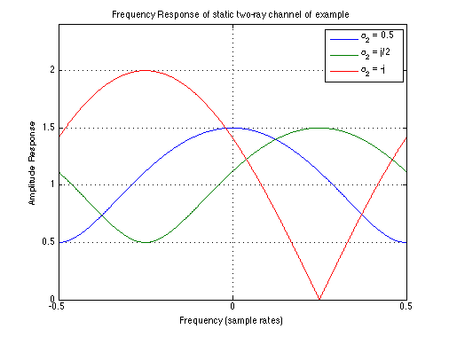

Frequency Response of static two-ray channel
Copyright 2007 Telecommunications Lab
f = -0.5:0.001:0.5; T = 1; first = sqrt(1.25 + cos(2*pi*f*T)); second = sqrt(1.25 + sin(2*pi*f*T)); third = sqrt(2 - 2*sin(2*pi*f*T));
plot(f, first, f, second, f, third); xlabel('Frequency (sample rates)'); ylabel('Amplitude Response'); title('Frequency Response of static two-ray channel of example'); axis([-0.5 0.5 0 2.4]) legend('\alpha_2 = 0.5', '\alpha_2 = j/2', '\alpha_2 = -j'); grid on;